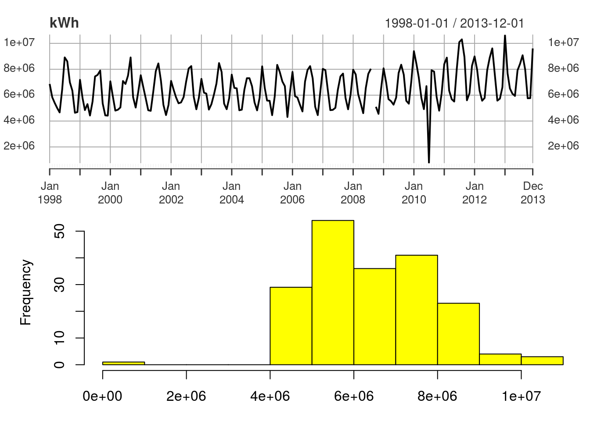
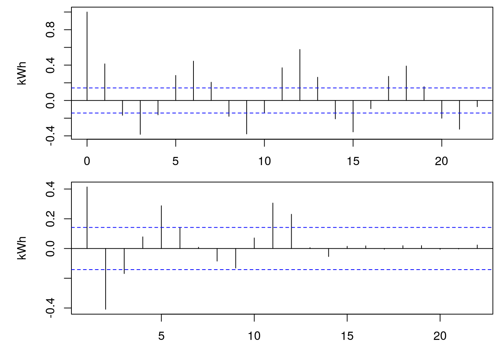
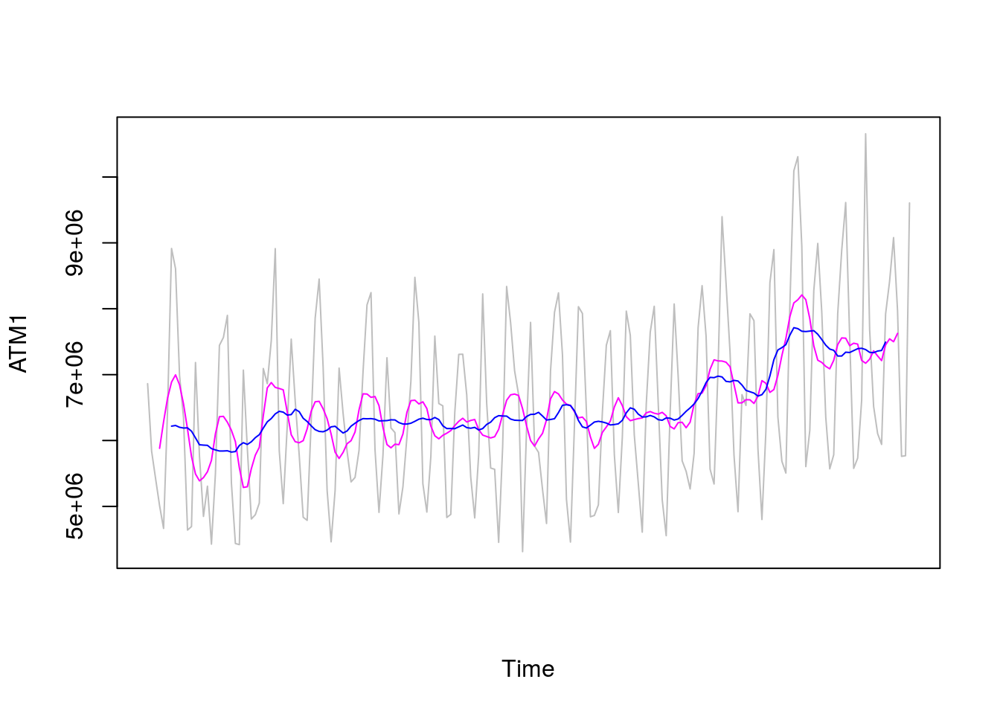
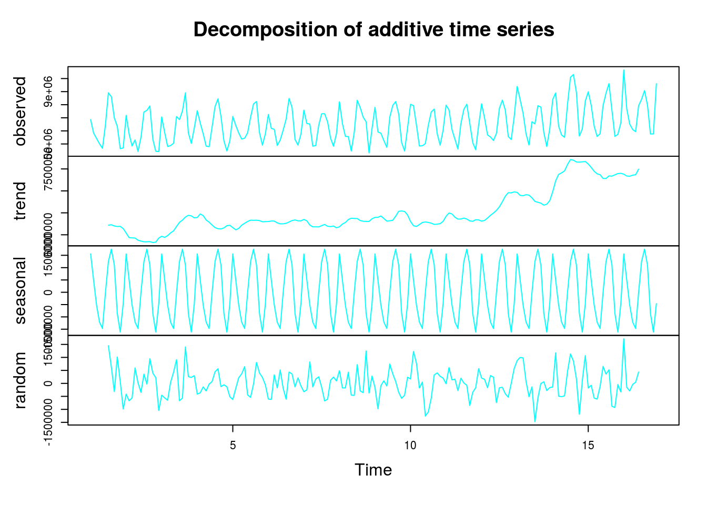
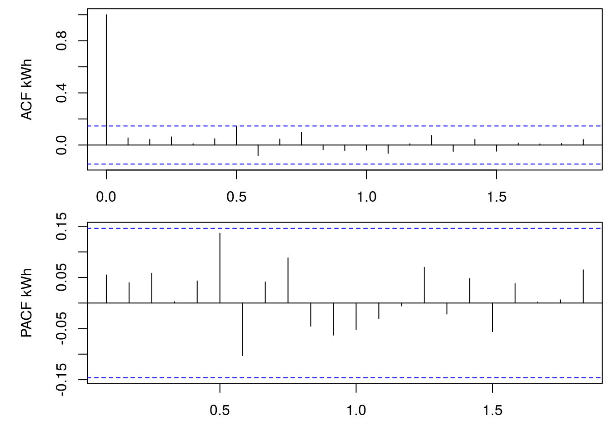
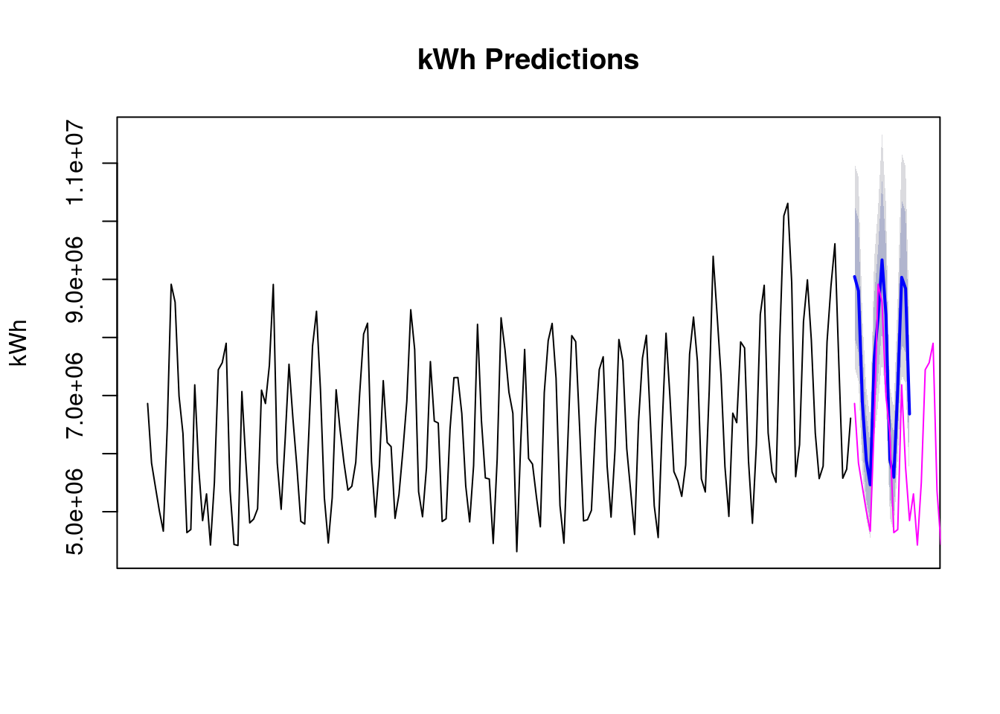

Preamble:
This document focuses on the time series analysis. A simple dataset of residential power usage from January 1998 to December 2013.
Research question:
- through an analysis, model this data and monthly forecast for 2014
Structure of analysis:
- Exploratory Data Analysis
- Visualizations
- ACF and PACF
- Clean The Data
- Trend Preview
- Data Decomposition Plot
- Stationarity Test
- Model Data
- Transformation
- ARIMA Model
- Evaluation
- Box-Ljung Test
- Forecasting
- Model Accuracy
sourceURL <- "https://raw.githubusercontent.com/jzuniga123"
file <- "/SPS/master/DATA%20624/ResidentialCustomerForecastLoad-624.xlsx"
download.file(paste0(sourceURL, file), "temp.xlsx", mode="wb")
energy <- xlsx::read.xlsx("temp.xlsx", sheetIndex=1, header=T)
# the “YYYY-MMM” format dates are interpreted as factors. They must be converted to dates
energy$YYYY.MMM <- as.Date(paste0(energy$YYYY.MMM,"-01"), format = "%Y-%b-%d")
invisible(file.remove("temp.xlsx"))Exploratory Data Analysis
head(energy)## CaseSequence YYYY.MMM KWH
## 1 733 1998-01-01 6862583
## 2 734 1998-02-01 5838198
## 3 735 1998-03-01 5420658
## 4 736 1998-04-01 5010364
## 5 737 1998-05-01 4665377
## 6 738 1998-06-01 6467147# preview the class of the dataset
class(energy)## [1] "data.frame"str(energy)## 'data.frame': 192 obs. of 3 variables:
## $ CaseSequence: num 733 734 735 736 737 738 739 740 741 742 ...
## $ YYYY.MMM : Date, format: "1998-01-01" "1998-02-01" ...
## $ KWH : num 6862583 5838198 5420658 5010364 4665377 ...# preview descriptive statistics on quantitative and qualitative variables
summary(energy)## CaseSequence YYYY.MMM KWH
## Min. :733.0 Min. :1998-01-01 Min. : 770523
## 1st Qu.:780.8 1st Qu.:2001-12-24 1st Qu.: 5429912
## Median :828.5 Median :2005-12-16 Median : 6283324
## Mean :828.5 Mean :2005-12-15 Mean : 6502475
## 3rd Qu.:876.2 3rd Qu.:2009-12-08 3rd Qu.: 7620524
## Max. :924.0 Max. :2013-12-01 Max. :10655730
## NA's :1# preview the periods between dates in dataset
xts::periodicity(unique(energy$YYYY.MMM))## Monthly periodicity from 1998-01-01 to 2013-12-01Dataframe spans monthly from January 1, 1998 to December 1, 2013.
# preview observations in the dataframe that have no missing values
energy[!complete.cases(energy), ]## CaseSequence YYYY.MMM KWH
## 129 861 2008-09-01 NADataframe contains one missing value in kWh usage.
Visualizations
# plots each observed value against the time of the observation, with a single line connecting each observation across the entire period
kWh <- xts::xts(energy$KWH, order.by=energy$YYYY.MMM)
par(mfrow=c(2, 1), mar = c(3, 5, 0, 0), oma = c(0, 0, 0.5, 0.5))
plot(kWh, main="kWh")
# display frequency at which values in a vector occur
hist(kWh, col="yellow", xlab="", main="")
Obervations:
- Line plot and Histogram shows an outlier around the three-quarter mark of the series.
ACF and PACF
par(mfrow=c(2, 1), mar = c(3, 5, 0, 0), oma = c(0, 0, 0.5, 0.5))
# ACF autocorrelations between each observation and its immediate predecessor (lagged observation)
acf(na.omit(kWh), ylab="kWh", main="")
# PACF autocorrelations between the current observation and each individual lagged observation
pacf(na.omit(kWh), ylab="kWh", main="")
Observations:
- ACF and PACF plots show autocorrelation between each observation and its immediate predecessor and autocorrelation between the current observation and other individual lagged observations.
Clean The Data
# data cleaning w/ forecast::tsclean() and converted to a time series object using the ts().
# tsclean() function imputes nulls and removes outliers.
# ts() function converts data to a time series object which is compatible with the forecast package.
kWh <- ts(forecast::tsclean(energy$KWH, replace.missing=T),
frequency = 12, start=start(energy$YYYY.MMM)) # data sampled monthly = 12
kWh[kWh==min(kWh)] <- mean(kWh[kWh!=min(kWh)])Trend Preview
A moving average smoother is helpful in examining what kind of trend is involved in a series. Moving average models should not be confused with moving average smoothing. A moving average model is used for forecasting future values while moving average smoothing is used for estimating the trend-cycle component of past values. The ma() function computes a simple moving average smoother of a given time series.
plot(kWh, col=8, xaxt = "n", ylab="ATM1")
lines(forecast::ma(kWh, order=6), col=6) # pink line biannual period
lines(forecast::ma(kWh, order=12), col=4) # blue line annual period
Observations:
- The 6-month and 12-month moving average smoother line shows that the data has a slight apparent trend.
Data Decomposition Plot
Decomposes and plots the observed values, the underlying trend, seasonality, and randomness of the time series data.
plot(decompose(kWh), col=5)
Obseravations:
- Plotting the trend-cycle and seasonal indices computed by additive decomposition shows that the data have a slight apparent trend, seasonal fluctuations, and fairly random residuals.
Stationarity Test
Dickey_Fuller Test
An augmented Dickey-Fuller unit root test evaluates if the data exhibit a Stationarity process with deterministic trend or a Stationarity process with stochastic trend.
tseries::adf.test(kWh)## Warning in tseries::adf.test(kWh): p-value smaller than printed p-value##
## Augmented Dickey-Fuller Test
##
## data: kWh
## Dickey-Fuller = -4.5454, Lag order = 5, p-value = 0.01
## alternative hypothesis: stationaryThe augmented Dickey-Fuller unit root test p-value is below α=0.05. Therefore, the null hypothesis that the data has unit roots is rejected. The data exhibit stochastic trend which suggests using regression (AR) in lieu of differencing. Autoregressive (AR) modeling acts like partial differencing when ϕ<1. When ϕ=1 the AR(1) model is like a first-order difference.
Model Data
The train and test sets are created by referencing rows w/ index. The indexed rows for the testing set are a window at the end of the times series. The window sized for the test set is that of the desired prediction. The training set window is comprised of the indexes which are the complement of the test set indexes.
index_train <- 1:(length(kWh) - 12)
kWh_train <- ts(kWh[index_train], frequency=12)
kWh_test <- ts(kWh[index_train], frequency=12)Transformation
The Augmented Dickey-Fuller Test results support not differencing. Data can be seasonally adjusted for modeling and then reseasonalized for predictions. The modeling algorithm being used evaluates seasonal components and produces predictions that reflect the seasonality in the underlying data. Therefore, the data need not be seasonally adjusted. Heteroskedasticity refers to the circumstance in which the variability of a variable is unequal across the range of values of a second variable. Box-Cox transformations can help to stabilize the variance of a time series.
(lambda <- forecast::BoxCox.lambda(kWh_train))## [1] -0.1733063The Box-Cox transformation parameter suggested is about λ=−0.25. This rounded (slightly more interpretable) value is suggestive of an inverse quartic root. This Box-Cox transformation stabilizes the variance and makes the series relatively homoskedastic with equal variance.
ARIMA Model
The auto.arima() function chooses an ARIMA model automatically. It uses a variation of the Hyndman and Khandakar algorithm which combines unit root tests, minimization of the AICc, and MLE to obtain an ARIMA model. The function takes some short-cuts in order to speed up the computation and will not always yield the best model. Setting stepwise and approximation to FALSE prevents the function from taking short-cuts.
(fit <- forecast::auto.arima(kWh_train, stepwise=F, approximation=F, d=0, lambda=lambda))## Series: kWh_train
## ARIMA(0,0,3)(2,1,0)[12] with drift
## Box Cox transformation: lambda= -0.1733063
##
## Coefficients:
## ma1 ma2 ma3 sar1 sar2 drift
## 0.2807 0.0855 0.2232 -0.7724 -0.4408 1e-04
## s.e. 0.0757 0.0823 0.0687 0.0742 0.0812 1e-04
##
## sigma^2 estimated as 3.707e-05: log likelihood=621.98
## AIC=-1229.95 AICc=-1229.25 BIC=-1208.08The auto.arima() function suggests an ARIMA(0,0,3)(2,1,0)12 model.
Evaluation
par(mfrow=c(2, 1), mar = c(3, 5, 0, 0), oma = c(0, 0, 0.5, 0.5))
acf(residuals(fit), ylab="ACF kWh"); pacf(residuals(fit), ylab="PACF kWh")
Observations:
- The residuals of the model appear to display the characteristics of White Noise in both the ACF and PACF plots. None of the residuals are significant. At a 95% confidence interval this is well within probabilistic expectations.
Box-Ljung Test
The Box-Ljung test is helpful in assessing if data follow a White Noise pattern. The ARIMA attribute of the fitted model returns a vector containing the ARIMA model parameters p,q,P,Q,periods,d and D; in that order.
Box.test(residuals(fit), lag=7, fitdf=sum(fit$arma[1:2]), type="Ljung-Box")##
## Box-Ljung test
##
## data: residuals(fit)
## X-squared = 7.2523, df = 4, p-value = 0.1231The null hypothesis of independence is not rejected. The Box-Ljung shows that the autocorrelations of the residuals from the model are not significantly different from zero at α=0.05. The residuals of the model displays the characteristics of White Noise. The model passes the required checks and is therefore suitable for forecasting.
Forecasting
Forecasts are done using the forecast::forecast() function. Since the data was not seasonally adjusted, they need not be reseasonalized prior to forecast.
fcast <- forecast::forecast(fit, h=15)
plot(fcast, ylab="kWh", main="kWh Predictions", xaxt="n")
lines(lag(kWh_test, -length(kWh_train)), col=6)
Observations:
- The prediction appears to produce a useful forecasts that reflect patterns in the original data.
- Prediction point estimates are represented by a blue line, prediction intervals are represented by blue bands, and actual values are represented by a pink line.
Model Accuracy
The accuracy() function is helpful for obtaining summary measures of the forecast accuracy: Mean Error (ME), Root Mean Squared Error (RMSE), Mean Absolute Error (MAE), Mean Percentage Error (MPE), Mean Absolute Percentage Error (MAPE), Mean Absolute Scaled Error (MASE), and Autocorrelation of errors at lag 1 (ACF1).
round(forecast::accuracy(fcast, length(kWh_test)), 3)## ME RMSE MAE MPE MAPE
## Training set 39449.18 581186.1 456353.6 0.056 7.067
## Test set -9046871.23 9046871.2 9046871.2 -5026039.573 5026039.573
## MASE ACF1
## Training set 0.413 0.115
## Test set 8.185 NAThese accuracy for the predications is fair. The large metrics are representative of the large values found in the data.